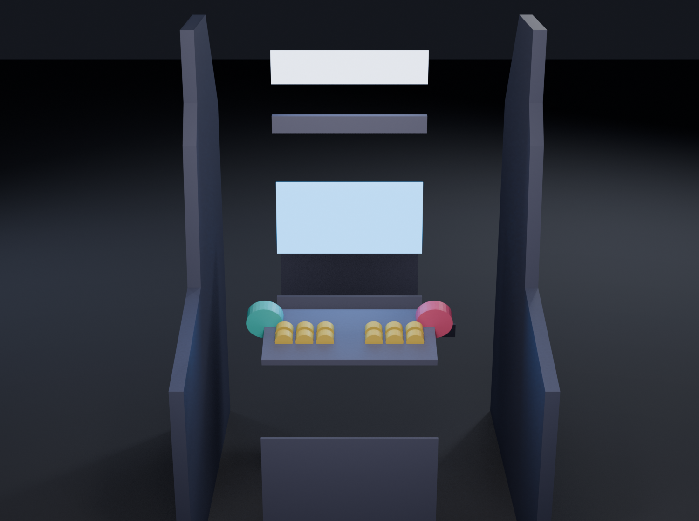

Manual de montagem
Bartop de 2 jogadores impresso numa Ender 3: das peças cortadas à caixa fechada, em 8 etapas. Monte por blocos e encaixe tudo a seco antes de colar.
Como fica montado



Renders ilustrativos do conjunto, nas proporções do modelo.
As 18 partes clique numa parte para ir à etapa em que ela entra
 01Base panelEtapa 2 · Estrutura
01Base panelEtapa 2 · Estrutura 02Left main panelEtapa 2 · Estrutura
02Left main panelEtapa 2 · Estrutura 03Right main panelEtapa 2 · Estrutura
03Right main panelEtapa 2 · Estrutura 04Button panelEtapa 3 · Controle
04Button panelEtapa 3 · Controle 05Audio panelEtapa 4 · Monitor
05Audio panelEtapa 4 · Monitor 06Rear doorEtapa 6 · Traseira
06Rear doorEtapa 6 · Traseira 07Button panel support barEtapa 3 · Controle
07Button panel support barEtapa 3 · Controle 08Pause barEtapa 3 · Controle
08Pause barEtapa 3 · Controle 09Monitor support panelEtapa 4 · Monitor
09Monitor support panelEtapa 4 · Monitor 10Power panelEtapa 6 · Traseira
10Power panelEtapa 6 · Traseira 11Rear handle panelEtapa 6 · Traseira
11Rear handle panelEtapa 6 · Traseira 12Above monitor panelEtapa 4 · Monitor
12Above monitor panelEtapa 4 · Monitor 13Under marquee panelEtapa 5 · Marquee
13Under marquee panelEtapa 5 · Marquee 14Side panel detail circlesEtapa 8 · Acabamento
14Side panel detail circlesEtapa 8 · Acabamento 15Monitor bezelEtapa 4 · Monitor
15Monitor bezelEtapa 4 · Monitor 16PI3 mountable caseEtapa 7 · Eletrônica
16PI3 mountable caseEtapa 7 · Eletrônica 17Marquee panelEtapa 5 · Marquee
17Marquee panelEtapa 5 · Marquee 18Additional supports and details - if neededEtapa 2 · Estrutura
18Additional supports and details - if neededEtapa 2 · EstruturaO que comprar antes
Colagem das peças
- Super Bonder (cianoacrilato) + Ativador
- Epóxi (Araldite) para juntas de esforço
- Fita crepe + elásticos/grampos
Estrutura
- Parafusos para plástico 3×12 e 3×16 mm (~60-80)
- Insertos roscados M3 + parafusos (opcional, mais forte)
- Furadeira + brocas 2,5 e 3 mm, chave de fenda
- Esquadro de 90°
Eletrônica
- Raspberry Pi + fonte 5V/3A (o seu, já com RetroPie)
- Tela LCD + placa controladora HDMI
- Kit 2 joysticks + ~16 botões + 2 encoders USB zero-delay
- 2 alto-falantes + mini amplificador
- Fita LED para o marquee + cabos e conectores
Acabamento
- Lixa 220 e 400
- Massa rápida / primer spray
- Tinta (se for pintar)
As 8 etapas
Vire os pedaços em painéis inteiros
Os painéis grandes saíram fatiados pra caber na mesa da Ender 3. Antes de montar qualquer coisa, junte os pedaços de cada painel de volta num só. É um trabalho de bancada, tranquilo, e dá pra fazer enquanto a impressora roda as próximas peças.
- Junte na mesa os pedaços do mesmo painel. No controle eles aparecem juntos, sob o mesmo nome (ex.: Base 5 · 4 pedaços), e o mini-mapa de cada miniatura mostra a posição do pedaço.
- Encaixe os pinos sem cola primeiro. Tem que fechar plano, sem degrau na emenda. Se não fechar, não force: veja se é o pedaço certo.
- Fechou bem? Separe, passe cola na emenda e nos pinos, encaixe de novo e prenda com fita até secar.
- Quer mais firmeza? Corra um filete de epóxi por dentro, ao longo da emenda.
01Base panel02Left main panel03Right main panel04Button panel05Audio panel06Rear door07Button panel support bar13Under marquee panel17Marquee panelSuper bonder + ativador resolve a maioria. Pra emenda que vai pegar peso, epóxi. Fita crepe pra segurar enquanto cura.
Levante a caixa
Essa é a etapa que tira a dúvida do "será que fica firme". Quando base, os dois lados e as barras internas fecham, você já tem uma caixa que para em pé sozinha e não balança.
- Deite a Base (1) na bancada.
- Levante o Lado Esquerdo (2) e o Direito (3) e parafuse na base, usando um esquadro para garantir 90°. Torto aqui vira torto no resto todo.
- Sempre pré-fure com broca 2,5 mm antes do parafuso, senão o plástico racha.
- Encaixe as barras 7 e 9 entre os lados: elas definem a largura certa e travam a caixa.
- Se quiser, reforce os cantos com os suportes da peça 18.
01Base panel02Left main panel03Right main panel18Additional supports and details - if needed~20 parafusos 3×16 mm, parafusadeira, broca 2,5 mm, esquadro. No fim, segure e balance: não pode torcer. Se torcer, reaperte antes de seguir.
Monte o painel de controle
Joysticks e botões dos dois jogadores. Faça isso com a caixa ainda aberta: você vai precisar de espaço pra passar a fiação por baixo.
- Prenda a Barra de Suporte (7) na frente, entre os lados: é nela que suas mãos vão descansar.
- Encaixe o Painel de Botões (4) na inclinação da frente.
- Coloque a Barra de Pausa (8) na borda (botões de pausa, select e moedas).
- Instale joysticks e botões, passe a fiação até os encoders USB e teste um por um antes de fechar.
04Button panel07Button panel support bar08Pause barKit 2 jogadores: 2 joysticks + ~16 botões + 2 encoders USB zero-delay (plug and play no RetroPie).
Instale a tela
A tela e a moldura que a emoldura por fora.
- Parafuse a tela no Suporte do Monitor (9), por dentro da caixa.
- Encaixe a Moldura (15) por fora; ela esconde a borda da tela.
- Monte o Painel Acima do Monitor (12) e o Painel de Áudio (5) com os alto-falantes.
- Ligue a tela no Pi (HDMI) e confira a imagem antes de fechar.
09Monitor support panel15Monitor bezel12Above monitor panel05Audio panelParafusos M3/M4 pra tela, 2 alto-falantes + mini amplificador. Meça o vão da moldura antes de comprar a tela.
Feche o topo e o marquee
O letreiro de cima, a cara do fliperama.
- Monte o Sob-Marquee (13).
- Passe a fita LED por dentro e fixe o Marquee (17) na frente dela pra iluminar de fundo.
- Se vai gravar o "ARCADE" no marquee, faça isso antes de montar; depois fica difícil.
13Under marquee panel17Marquee panelFita LED branca + fonte pequena. O marquee translúcido espalha melhor a luz.
Resolva a traseira
É por trás que você liga tudo e faz manutenção. Veja a vista traseira no topo da página.
- Painel de Força (10): tomada embutida, chave liga/desliga e a fonte.
- Painel de Alça (11): a alça pra carregar o fliperama.
- Porta Traseira (6): deixe removível (ímãs ou parafusos), porque você vai querer abrir depois.
06Rear door10Power panel11Rear handle panelTomada de painel, chave e ímãs de neodímio pra porta (bem mais prático que parafuso).
Ligue a eletrônica
A parte que faz jogar. O seu Raspberry Pi já está pronto com o RetroPie: é só montar e plugar.
- Fixe o Case do Raspberry Pi (16) dentro, perto da traseira (fica fácil de acessar as portas).
- Ligue os cabos: Pi → tela (HDMI), botões → encoders USB → Pi, som e o LED do marquee.
- Energize e chame um jogo pra testar.
16PI3 mountable caseSeu RetroPie já roda Marvel vs Capcom e Metal Slug 2. Fonte 5V/3A pro Pi: não economize aqui, fonte fraca trava o sistema.
Acabamento (opcional)
Só estética: nada aqui muda se o fliperama funciona. Pode deixar pro final ou até pular.
- Cole os Círculos Decorativos (14) nas laterais. São 25 peças só de enfeite.
- Lixe as emendas, passe massa e primer, e pinte na cor que quiser.
- Se curtir, aplique adesivo ou arte lateral por cima.
14Side panel detail circlesLixa 220 e 400, massa rápida, primer spray, tinta. Tudo opcional.
Será que funciona?
- A rigidez vem da caixa fechada (base, lados, frente e traseira), não de cada peça. É igual a um móvel.
- As emendas coladas ficam sanduichadas na estrutura e não precisam aguentar esforço sozinhas.
- Se encaixou a seco em cada etapa, vai funcionar colado.
- Deixe a parte elétrica para o fim, mas teste os componentes antes.